ABOUT ME
Hi! My name is Madeline (she/her) and I am a junior at Western Washington University
studying Computer Science and Communication Studies. To support my interests in Software Development,
Mobile Application Development, and CS Education, I have been actively pursuing opportunities both
independently and within my community. My most recent endeavors include the self-teaching of Android
Development and HTML/CSS, as well as undergraduate research focused on the development of a new
CS Secondary Education BAe Major at WWU.
Outside of my studies, you'll find me playing violin, spending time with friends, reading
restaurant reviews on Yelp, and watching TV. (My current binge is How to Get Away with Murder!)
I also run an Instagram account @comp.sci where I
post information aimed towards CS students, e.g. internship notifications, resume tips, coding
problems, and more!
TECHNICAL SKILLS
- LANGUAGES: 3+ Years Java, HTML/CSS, C, Python, Racket
- OPERATING SYSTEMS: Windows, Linux
- IDEs/VERSION CONTROL: VS Code, Git, GitHub, Android Studio, Eclipse, Gradle, Racket
- PROGRAMMER SKILLS: Debugging, Pair Programming, Writing and Executing Unit Tests
- OTHER: Slack, Discord, KanBan Workflow, Microsoft Office Suite, Adobe Creative Cloud
RELEVANT COURSEWORK
-
Computer Science
- PYTHON: Introduction to Computer Programming I
- JAVA: AP Computer Science; Linear Data Structures and Object Oriented Programming; Data Structures
- C: Computer Systems I
- RACKET: Formal Languages and Functional Programming
-
Math
- CALCULUS: Calculus I; Calculus 2
- LINEAR ALGEBRA: Intro to Linear Algebra
- PROBABILITY AND STATISTICAL INFERENCE USING INTEGRALS
PROJECTS
Fridge Food Programmed a mobile application using Android Studio and Java where users can find recipes that use ingredients in their refrigerator.
Graphs & Paths Implemented Dijkstra’s Algorithm using Java, Git and Gradle to build an interactive command-line program that computes the shortest paths of a graph read from a text file while maintaining O(log n) runtime.
Hunt the Wumpus Designed UX/UI using C++ for a computer game design competition at Microsoft. Collaborated with a team of six other engineers to seamlessly integrate individual code into one program.
For more projects, check out my GitHub repositories, here!
CONTACT
To discuss internship and job opportunities, please connect with me on LinkedIn. I look forward to hearing from you!